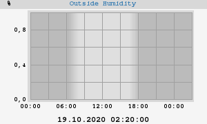
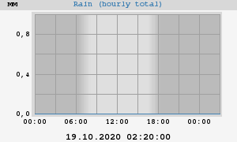
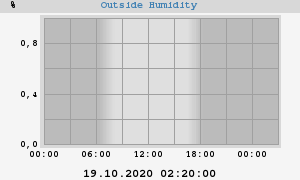
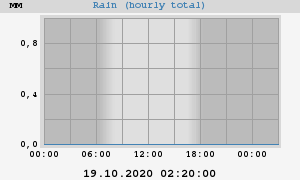
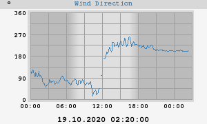
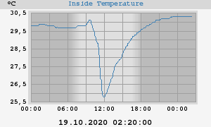
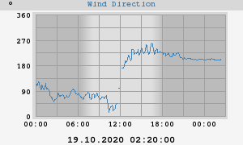
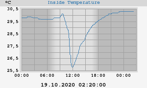

About this weather station:
| Latitude: | 56° 34.26' N |
| Longitude: | 036° 25.80' E |
| Altitude: | 140 метров |
This station uses a WMR300, controlled by 'weewx', an experimental weather software system written in Python. Weewx was designed to be simple, fast, and easy to understand by leveraging modern software concepts.
Weewx uptime: 3 дней, 11 часов, 54 минут
Server uptime: 3 дней, 11 часов, 57 минут
weewx v3.8.2
Today's Almanac
| Sunrise: | 07:16:02 |
| Sunset: | 17:22:20 |
| Moon Phase: | Waxing crescent (5% full) |
 




 


